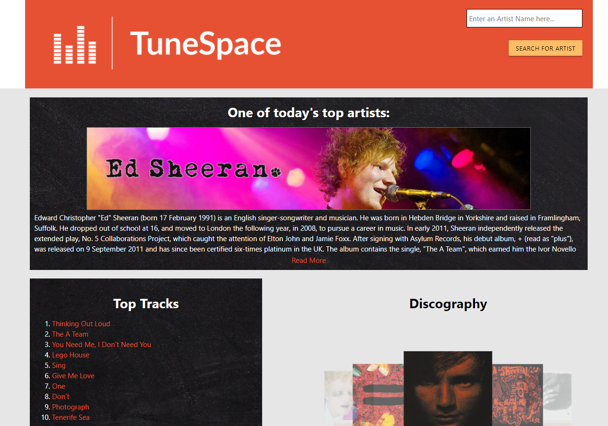
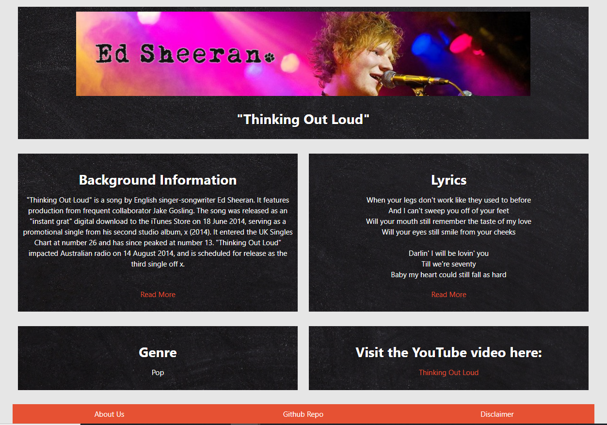

TuneSpace
Project Report
Languages Used
HTMLCSS
JS
With Help From...
JqueryAjax
Materialize CSS
Readmore.js
APIs Used
Giphy APIHappi.dev API
Wiki API
The AudioDB API
Project Description
TuneSpace is a guide that provides biographies, discographies, and lyrics of musicians in all genres pulling data from various databases into one convenient location. By bringing multiple data streams into one centralized hub our goal is to create a communal website where users can explore their favorite artists and discover new music. The site features dynamically updated HTML and CSS with local storage used for search results and other relevant parameters.Project Thoughts
Screenshots of Live Deloyment
